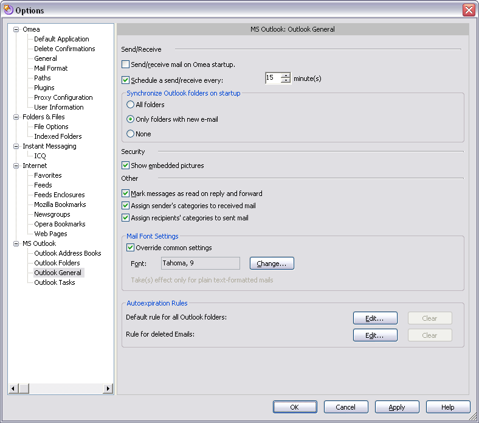

Outlook General
You can access this option from the Main menu: Tools | Options: MS Outlook: Outlook General
These options enable you to control the way Omea integrates with MS Outlook.
Outlook general options in the Options Dialog
Send/Receive
The options in this group control how Omea sends and receives e-mail messages via MS Outlook.
Deliver on Startup
When this option is checked, e-mail messages from the Outlook e-mail server download immediately when you start Omea. If there are a very large number of messages, checking this option could increase the amount of time Omea needs to fully start up.
Schedule Automatic Send/Receive Every n Minutes
When checked, Omea will automatically download e-mail message from the Outlook e-mail server according to the interval set in the number box. This will override any send/receive interval configured in Outlook itself.
Synchronize Outlook Folders on Startup
All Folders
When checked, all Outlook folders will be synchronized on the startup. Please note that if there are a very large number of messages, checking this option could increase the amount of time Omea needs to fully start up.
Only Folders with New E-mail
When checked, only those folders with new e-mail messages (which appeared between current and previous start of Omea Pro) will be synchronized.
None
When checked, none of the folders will be synchronized on startup.
Security
Show Embedded Pictures
When checked, the e-mail viewer in Omea will display pictures embedded in Outlook e-mail messages that have Rich Text or HTML format.
Note that checking this option lowers your e-mail security level. It is possible for senders to use "Web bugs"... usually invisible images embedded in HTML code that return information to the sender of the e-mail. For example, it is possible that an embedded image could notify the sender that you have opened the message, thereby confirming your address as a valid e-mail address.
Autoexpiration Rules
This group of options will allow you to control when Omea can consider the e-mail messages “old” or outdated and actions which you want Omea to perform with these outdated e-mail messages. Once you customize these options, you will manage to avoid the information clutter and always have latest and the most important information in your folders. You can later edit these default expiration rules and define per foder expiration rules (conditions, exceptions and actions) in the Rules Manager, Auto Expire tab or when you right-click the selected folder in the Outlook Folders pane and select Edit Expiration Rules on the pop-up menu.
Default Rule for All Outlook Folders
Using this group of options you can specify the default expiration rule for all Outlook folders which you set to be indexed.
Rule for Deleted E-mail Messages
Using this group of options you can control what Omea Pro will do with the newsgroups posts which it considers“old”. By default, these messages are deleted, but you can change this action if you specify something else in the Edit Expiration Rule dialog which appears if you click the Advanced button and specify other actions in it.
Other
Mark Messages as Read on Reply or Forward
When this option is checked, Omea will mark an Outlook e-mail message as read when you reply to it or forward it if you have not actually opened the message.